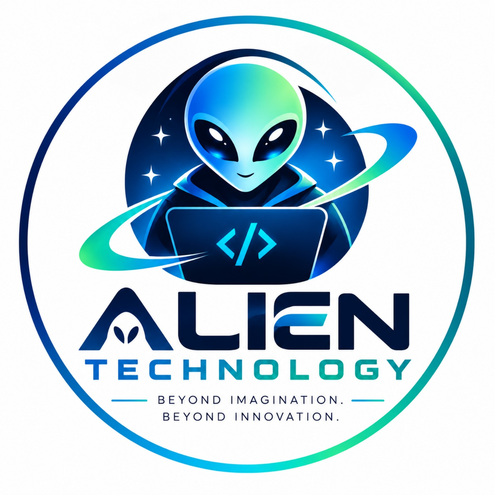

Connect donors
Help people discover potential donors by blood group and area, subject to consent and availability.

ALIEN TECHNOLOGYIDEA LAB PROJECTBLOOD IN NEED is a proposed AI-powered platform designed to help connect blood donors, patients, hospitals and licensed blood banks through a more accessible digital experience.
We are ALIEN TECHNOLOGY, a student team exploring how creativity, design thinking and technology can address real-world challenges.
Through six Idea Lab experiments, we are shaping a thoughtful concept into a practical website prototype.
A centralized digital connection platform where people can register their willingness to donate, discover potential donors and submit blood requests for verification.
See how it works →Help people discover potential donors by blood group and area, subject to consent and availability.
Provide a structured way to submit requests for review by an authorized hospital or administrator.
Offer helpful guidance and organize information without replacing medical professionals.
Explore the process we use to understand the challenge, generate ideas and develop BLOOD IN NEED.
Experiment pages will be filled with your team's actual activities, evidence, outcomes and reflections.
The proposed workflow keeps verification, consent and clinical decisions in the right hands.
A patient or family member shares the required blood group, location and hospital details.
An authorized hospital or administrator reviews the request before publication.
The platform identifies potential registered donors using relevant details and their consent.
Interested donors respond, while the hospital or licensed blood bank manages donation and medical checks.
Important: BLOOD IN NEED is a connection concept, not a medical service. Donor eligibility, testing and blood compatibility must be assessed by qualified healthcare professionals and licensed institutions.
A student team working together to turn an idea into a thoughtful prototype.
ALIEN TECHNOLOGY
Photo to be added
Photo to be added
Photo to be added